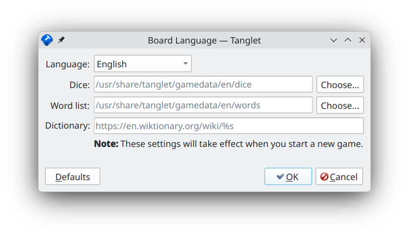

To configure Tanglet, open the Settings menu. You see the following entries:
**Show Maximum Score* – you can choose between three options for the status line at the bottom of the window:
Never – You see word lengths and the count of words found for each length.
End Of Game – At the end of the game, you see the contained words per word length and the count of words found by you.
Always: The behavior described for End Of Game is always visible.
The visibility of the word count status bar can be toggled with Show Word Counts.
Show Missed Words – In addition to the list of found words on the left, an extra tab named Missed will de displayed. This tab is inactive until the game ends.
Board Language – You can change the board language by clicking on the drop-down list and choose from the available languages. Besides that, you have some extra options:

You can change the file paths to Dice, Word List and Dictionary by entering the file paths manually or click on the respective Choose… buttons to open a file chooser dialog. To set all entries back to the defaults, click on Defaults in the bottom left corner of the window. As usual, you can stop editing the preferences with the Cancel button, and apply the changes with OK. Your changes will be applied after the next start of Tanglet.
Under Application Language, you can change the language of the user interface. The settings window opens with the button System language. Click on it to change the desired language from the drop-down menu. Again, your changes will be applied after the next start of Tanglet.
[!NOTE] Not all translated captions come from Tanglet itself. Because some of them are provided by the underlying Qt libraries, it might happen that some captions are still displayed in the system language. Maybe the following command is known to you for opening an application with different language settings:
$ export LC_ALL=C && tangletThis helps in such cases to switch completely to the desired language.